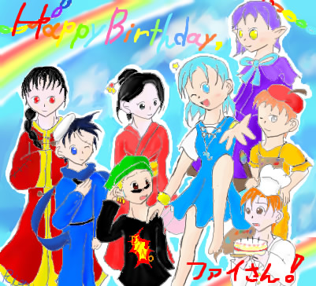
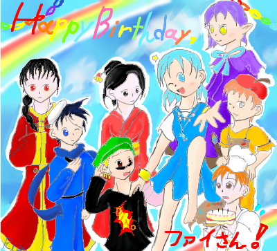

ファイさん、１日遅れてしまいましたが、お誕生日おめでとうございます。
こんなイラストでよければ、誕生日プレゼントとして受け取ってやってください＾＾
苦情は２５時間（ぇ）受付中でございます；
JPG保存でも９８KBほどありますので、
メール添付ではなくこのような形を取らせていただきました（滝汗。
これからも、どうかよろしくお願いいたします。
この１年が、ファイさんにとってよい１年となりますように。
星詩里音
ちなみに、上のイラストを少し加工して（パーブルの瞳とピノの汗です）さらにorz劣化した物はこちらです。
お好きなほうをお受け取りくださいませ（ぺこり。
